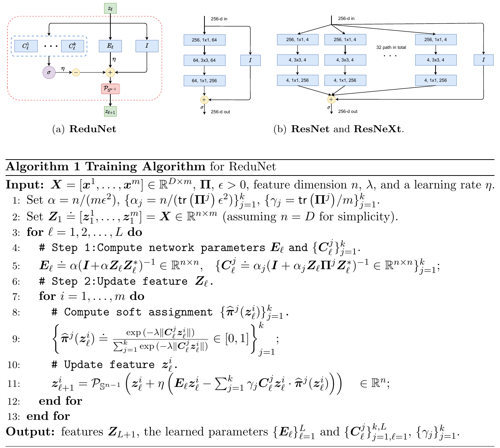
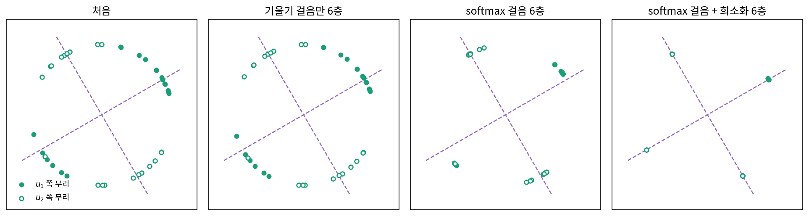
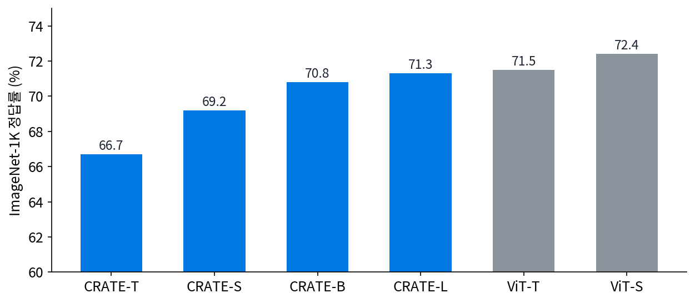
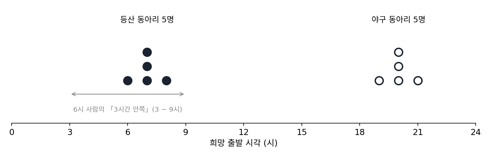
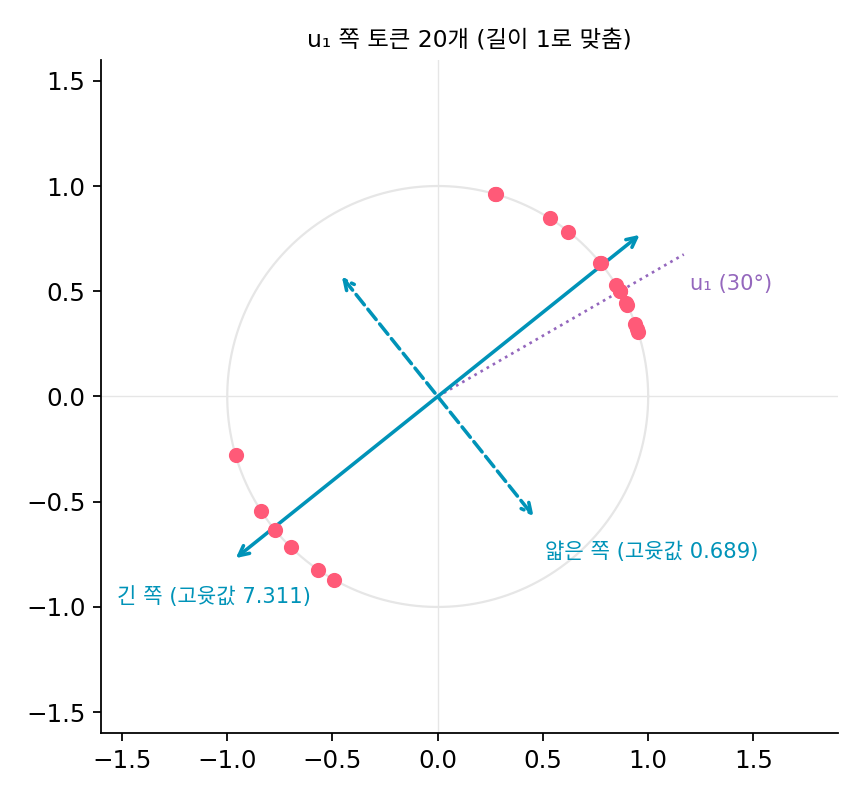
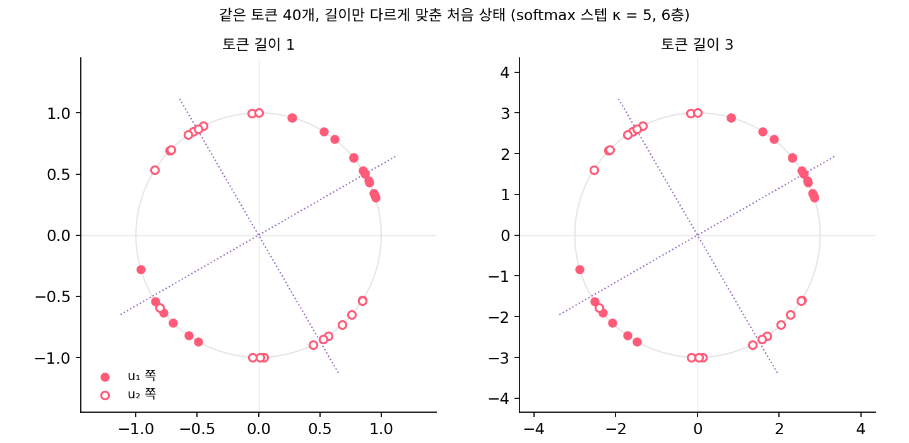

CRATE: 어텐션은 압축의 스텝, MLP 는 희소화의 스텝
LISTA 는 「이미 아는 목적을 빨리 풀기」였다. 목적은 L1 페널티가 붙은 희소 코딩으로 정해져 있었고, 신경망은 그 답을 흉내 냈다. 트랜스포머는 사정이 반대다. 어텐션과 MLP 를 번갈아 쌓은 구조가 먼저 있었고, 그 구조가 무엇을 줄이고 있는지는 아무도 정하지 않았다. 거꾸로 물어보자. 어떤 목적 하나를 정해 두고 그 목적을 줄이는 스텝을 펼치면, 트랜스포머를 닮은 층이 나올까?
역사: 그래디언트를 펼친 신경망에서 어텐션까지
코딩 레이트 감소를 한 줄씩 되짚어 보자. 토큰(신경망 안에서 그림 조각이나 낱말 하나를 나타내는 벡터) n 개를 주어진 정밀도 ε 로 적는 데 드는 비트를 토큰 하나로 나눈 값이 코딩 레이트다. 토큰들이 낮은 차원의 평평한 조각 몇 개에 모여 있을수록 작다. 토큰을 종류별로 나눈 모임을 클러스터라 하자(같은 물체를 찍은 그림 조각들이 한 클러스터). 토큰 전체의 코딩 레이트에서 클러스터마다 따로 적은 코딩 레이트를 뺀 것이 코딩 레이트 감소 ΔR 이고, 전체는 넓게 펼치고 클러스터 하나하나는 좁게 모은 표현일수록 크다.
마(Yi Ma)의 연구 모임은 이 목적에서 신경망을 바로 만들어 보는 시도를 이어 왔다. 찬(Kwan Ho Ryan Chan) 외의 ReduNet(JMLR 2022)은 코딩 레이트 감소를 키우는 경사 스텝을 그대로 층으로 펼쳤다. 층의 연산과 파라미터를 역전파로 배우는 대신 앞에서부터 한 층씩 계산해 정했다(역전파로 다듬을 수도 있다). 위(Yaodong Yu) 외의 「희소 코딩 레이트 감소로 만든 흰 상자 트랜스포머(White-Box Transformers via Sparse Rate Reduction)」(NeurIPS 2023)는 앞선 연구가 코딩 레이트의 그래디언트에 든 역행렬 탓에 큰 자료로 넓히기 어려웠다고 적고, 두 가지를 바꿨다. 클러스터별 코딩 레이트를 줄이는 그래디언트 스텝은 softmax 로 닮은 토큰끼리 섞는 근사로 바꾸고, 역행렬이 드는 전체 코딩 레이트의 그래디언트 대신 표현을 희소하게 만드는 ISTA 한 스텝을 썼다. 그렇게 얻은 층을 CRATE 라 불렀다.


목적을 정해 두고 그래디언트 스텝을 펼치면 끝이잖아요. ReduNet 에서 이미 한 걸 왜 몇 년 뒤에 다시 고쳐야 했어요?

ReduNet 의 층에는 코딩 레이트의 그래디언트가 그대로 들어 있어요. 그 그래디언트 식 안에 무엇이 있었죠?

역행렬이요. 음, 토큰 차원이 커지면 그 행렬도 커지고, 클러스터마다 하나씩이니까… 층마다 그걸 다 뒤집어야 하네요.

그래서 큰 자료로 넓히기 어려웠다고 CRATE 논문이 적었어요. 수식으로는 한 줄인 스텝이 계산으로는 감당이 안 됐던 거예요.

그럼 역행렬을 빼 버리면 되잖아요. 아, 그러면 그건 더는 그 목적의 그래디언트가 아니겠네요.
그래요. CRATE 는 그 대가를 알고 softmax 로 근사했어요. 정확한 스텝을 내려놓고 계산할 수 있는 스텝을 고른 거예요.

근사로 바꾼 스텝이 어텐션과 꼴이 같다면, softmax 스텝도 정말 클러스터를 얇게 만드는지는 어떻게 확인해요?
평면의 토큰 마흔 개로 한 층 따라가기
크게 보면 CRATE 의 한 층은 두 스텝이다. 첫 스텝은 토큰 표현 Z(토큰 n 개를 열로 늘어놓은 행렬)를 클러스터별 코딩 레이트가 줄어드는 방향으로 옮기고, 둘째 스텝은 딕셔너리 A 에 대해 희소해지도록 옮긴다.
논문의 식에는 어텐션 쪽에 상수 c 가 한 번 더 곱해져 있는데, 여기서는 꼴만 따라 하나로 줄여 적었다. 왼쪽 식의 밑줄 친 부분은 트랜스포머의 셀프 어텐션과 꼴이 같다. 토큰끼리 안쪽 곱으로 닮은 정도를 재고, softmax 로 비율을 만들어 닮은 토큰을 많이 섞는다. 다른 점은 질의·열쇠·값 행렬이 따로 없고 모두 Uⱼ 하나라는 것이다. 오른쪽 식은 ISTA 한 스텝 z ← 문턱(z − ηAᵀ(Az − x)) 에서 x 자리에 지금 표현 Z 를 넣고, 음수를 0으로 자르는 ReLU 를 문턱 대신 쓴 꼴이다. MLP 처럼 「행렬 곱 → 비선형 함수」로 되어 있다.
식만으로는 무엇이 줄어드는지 보이지 않으니 평면에서 따라가 보자. 토큰 40개를 두 방향 u₁(30°), u₂(120°) 근처에 20개씩 놓고, 표준편차 0.35의 노이즈를 섞었다. 층마다 먼저 토큰 길이를 맞추고(CRATE 의 층 정규화 대신. (가)(나)는 길이 1, (다)(라)는 길이 3), 스텝을 여섯 층 쌓는데, 스텝 크기는 (가)(나)가 κ = 1, (다)(라)가 κ = 5 다. 클러스터가 얼마나 한 직선에 붙었는지는 「두께」(클러스터 토큰 행렬의 둘째 특잇값 ÷ 첫째 특잇값, 0이면 한 직선 위)로 잰다. 코딩 레이트는 ε = 0.5 로 쟀다.
| 스텝 | 처음 두께 | 1층 뒤 두께 | 6층 뒤 두께 | ΔR(비트) 처음 → 6층 |
|---|---|---|---|---|
| (가) 한 클러스터(u₁ 쪽 20개)만, 코딩 레이트의 그래디언트 스텝 | 0.307 | 0.252 | 0.042 | (클러스터 하나라 없음) |
| (나) 두 클러스터 섞임, 같은 그래디언트 스텝 | 0.371 | 0.370 | 0.366 | 0.328 → 0.331 |
| (다) 두 클러스터 섞임, softmax 로 닮은 토큰끼리 섞는 스텝 | 0.371 | 0.335 | 0.161 | 0.328 → 0.589 |
| (라) (다) 뒤에 희소화 스텝까지 | 0.371 | 0.307 | 0.118 | 0.328 → 0.631 |
클러스터가 하나뿐이면 코딩 레이트의 그래디언트 스텝만으로 클러스터가 얇아진다(가). 그런데 두 클러스터가 섞이면 같은 스텝이 거의 아무 일도 하지 않는다(나). 그래디언트는 모든 토큰을 한 덩어리로 보고 얇은 방향을 찾는데, 두 방향이 모두 넓게 퍼져 있어 얇은 방향이 없기 때문이다. softmax 로 닮은 토큰끼리만 섞으면 클러스터마다 얇아지고 코딩 레이트 감소가 커진다(다). 희소화 스텝을 더하면 6층 뒤 토큰의 95%가 축 하나의 계수만 남은 코드가 된다(라).

그림의 오른쪽 두 칸에는 아쉬운 점도 보인다. 토큰이 방향 위에 붙는 데서 그치지 않고 몇 점으로 뭉쳐서, 같은 방향 토큰들의 크기 차이까지 지워졌다. 게다가 토큰 길이 같은 설정을 조금 바꾸면 결과가 뒤집히는데, 왜 뒤집히는지는 아래 문제 9에서 따져 본다. 이렇게 어텐션을 「클러스터마다 코딩 레이트를 줄이는 스텝」, MLP 를 「표현을 희소하게 하는 스텝」으로 읽고 그 두 스텝을 번갈아 펼쳐 만든 트랜스포머를 CRATE (코딩 레이트 감소와 희소화의 스텝을 펼친 트랜스포머, coding rate reduction transformer)라 한다.
ML에서: 이 읽기가 보인 것과 보이지 않은 것
위 외는 CRATE 를 ImageNet-1K 그림 분류로 학습시켰다. 논문 표 1에서 CRATE 네 크기의 정답률은 66.7%에서 71.3%였고, 비교한 ViT 두 크기는 71.5%와 72.4%였다. 파라미터 수가 ViT-S 와 비슷한 CRATE-B 는 70.8%로 ViT-S 보다 1.6%p 낮다. 논문은 이를 「공들여 다듬은 트랜스포머에 아주 가까운 성능」이라 적었다. 학습한 CRATE 의 층을 지나며 클러스터별 코딩 레이트와 0 아닌 계수의 비율이 대체로 줄어드는 것도 측정해 실었다. 다만 0 아닌 계수의 비율은 마지막 층에서 다시 올랐고, 논문은 이를 여러 종류의 물체가 특징 일부를 함께 쓰기 때문일 것이라고 풀이했다.

CRATE 의 ImageNet 실험이 보인 것은 두 가지다. 코딩 레이트 감소라는 목적 하나에서 거꾸로 짠 구조가 그림 분류에서 꽤 잘 통한다는 것, 그리고 그렇게 짠 신경망 안에서는 층마다 정한 양이 실제로 줄어든다는 것이다. 층마다 무엇을 하는지 식으로 말할 수 있다는 점은 보통의 트랜스포머에 없는 강점이다. 보이지 않은 것도 있다. 보통의 ViT 나 언어 모델이 학습 중에 이 목적을 따른다는 증거는 이 논문의 실험 범위 밖이다. CRATE 의 어텐션은 질의·열쇠·값을 하나로 묶은 특별한 어텐션이고, 그 softmax 는 그래디언트를 근사하려고 넣은 것이라 「어텐션이면 무엇이든 코딩 레이트를 줄인다」는 말로 넓힐 수 없다. 같은 성능을 내는 다른 읽기가 얼마든지 있을 수 있으므로, 정답률이 ViT 에 가깝다는 것도 그 읽기가 옳다는 증명이 아니다.
문제 7. 두 동아리의 출발 시각
등산 동아리 다섯 명은 오전 6, 7, 7, 8, 7시에, 야구 동아리 다섯 명은 저녁 19, 20, 21, 20, 20시에 모이고 싶다. 열 명이 단톡방에서 서로의 희망을 보고 자기 희망을 고친다. (가) 모두 「열 명 평균 쪽으로 반만큼」 고치기를 세 번 하면 희망 시각은 어떻게 되는가? (나) 「나와 3시간 안쪽인 사람들의 평균 쪽으로 반만큼」 고치기를 세 번 하면?


(가)부터 할게요. 열 명 평균이 13.5시예요. 반씩 세 번 다가가면 등산 쪽은 12.56 ~ 12.81시, 야구 쪽은 14.19 ~ 14.44시가 돼요.

다 점심 무렵으로 모였네. 낮 12시 반이 넘어 떠나는 등산이나 오후 2시가 넘어 모이는 야구를 원한 사람은 한 명도 없었는데.
(나)는요?
등산 쪽 사람한테는 3시간 안쪽이 등산 동아리뿐이라 평균이 7시예요. 세 번 하면 6.88, 7, 7, 7.12, 7 이고, 야구 쪽은 19.88 ~ 20.12 예요.
클러스터는 그대로 두 개고, 클러스터 안에서만 의견이 좁혀졌어. 6시와 8시를 원하던 사람이 7시 쪽으로 붙은 거야.
같은 「평균 쪽으로 다가가기」인데 누구와 평균을 내느냐만 달랐어요. 장난감의 (나)와 (다)도 그 차이였죠.

아, 그래디언트 스텝은 열 명 평균이고 softmax 스텝은 3시간 안쪽 평균이네요. softmax 가 「나와 닮은 사람」을 고르는 일을 해요.

3시간 문턱으로 딱 자르는 대신 닮은 정도에 따라 부드럽게 무게를 주는 게 softmax 고.
문제 8. 얇은 쪽을 더 많이 줄인다
장난감 (가)의 u₁ 쪽 토큰 20개를 길이 1로 맞추면 cZZᵀ (c = p/(nε²) = 2/(20 × 0.5²) = 0.40) 의 두 고윳값이 0.689(얇은 쪽)와 7.311(긴 쪽)이다. 코딩 레이트의 그래디언트 스텝 Z ← Z − κc(I + cZZᵀ)⁻¹Z 는 고윳벡터 방향마다 Z 를 1 − κc/(1 + 고윳값) 배로 줄인다. (가) κ = 1 이면 두 방향은 각각 몇 배가 되는가? (나) 두께(얇은 쪽 특잇값 ÷ 긴 쪽 특잇값)는 처음 0.307 에서 한 스텝 뒤 얼마가 되는가? (다) 모든 방향을 똑같은 배율로 줄이면 어떻게 되는가?

고윳값만 넣으면 돼요. 얇은 쪽은 1 − 0.40/1.689 = 0.763 배, 긴 쪽은 1 − 0.40/8.311 = 0.952 배예요. 두께는 비율이니까 0.307 × 0.763/0.952 = 0.246 이고요.
장난감 표에서는 (가)의 1층 두께가 0.252 였는데? 0.006 은 어디서 난 거지?
장난감에서는 층마다 무엇을 먼저 했죠?
토큰 길이를 1로 맞췄어요. 아, 코드에서도 스텝 다음 줄이 정규화였어요. 스텝 뒤에 토큰마다 길이를 다시 맞추면 토큰마다 늘어나는 비율이 달라서 두께가 조금 바뀌어요.
그럼 (다)는요?
모든 방향을 똑같이 줄이면 모양은 그대로고 크기만 작아져요. 길이를 다시 맞추면 원래대로예요.
그럼 (가)에서 두께가 얇아진 건 무엇 때문이었죠?

0.763 배와 0.952 배로 다르게 줄였으니까요. 행렬 (I + cZZᵀ)⁻¹ 이 고윳값이 큰 방향을 작게 누르니까, 고윳값이 작은 쪽, 그러니까 자료가 덜 퍼진 쪽이 더 세게 줄어서 얇아지는 거예요.
그래서 코딩 레이트의 그래디언트 스텝을 「압축」이라 불러요. 자료가 이미 좁은 방향은 더 좁혀서, 클러스터를 적는 데 필요한 방향 수를 줄이는 거예요.
문제 9. 토큰 길이 하나에 뒤집힌 결과
장난감 (다)의 softmax 스텝을 토큰 길이만 바꿔 다시 돌렸다(κ = 5, 6층). 토큰 길이 3 이면 두께가 0.371 → 0.161, ΔR 이 0.328 → 0.589 비트였다. 토큰 길이 1 이면 두께가 0.371 → 0.654, ΔR 이 0.328 → 0.032 비트이고, 제 방향보다 다른 클러스터 방향에 더 가까운 토큰이 처음 1개에서 19개로 늘었다. (가) 왜 길이가 결과를 뒤집는가? (나) 평면 토큰 40개의 장난감은 CRATE 에 대해 무엇을 말하고 무엇을 말하지 않는가?

이상해요. 길이만 바꿨지 토큰들의 방향은 그대로잖아요. 방향이 같으면 같은 쪽으로 모여야 할 것 같은데요.
softmax 안에 들어가는 값이 무엇이었죠?
토큰끼리의 안쪽 곱 zᵢᵀzⱼ 요. 길이가 1 이면 −1 ~ 1 이고 길이가 3 이면 −9 ~ 9 예요.
그 값을 softmax 에 넣으면 무게가 얼마나 벌어지죠?
음, −1 ~ 1 을 넣으면 가장 닮은 토큰과 가장 안 닮은 토큰의 무게가 e¹/e⁻¹ = 7.4 배밖에 차이가 안 나요. 닮은 토큰이나 안 닮은 토큰이나 비슷한 무게를 받으니까 문제 7 의 「열 명 평균」에 가까워지고요. 길이 3 이면 e⁹/e⁻⁹ 이라 닮은 토큰만 골라요.

그런데 열 명 평균이면 장난감 (나)처럼 그대로여야지, 왜 더 나빠져? 다른 방향에 붙은 토큰이 19개나 돼.
좋은 질문이에요. 닮은 정도의 차이가 작을 때, 무게는 무엇을 따라 조금씩 기울죠?
노이즈 때문에 생긴 작은 닮음을 따라 기울어요. 그 기울어진 평균 쪽으로 여섯 번 끌려가면, 노이즈가 만든 방향이 커지는 거네요.
(나)도 생각해 봐요. 평면 토큰 장난감은 무엇을 보였죠?
softmax 스텝이 클러스터마다 토큰을 얇게 모을 수 있다는 것. 그리고 그게 토큰 길이 같은 설정에 따라 된다는 것이요.
실제 CRATE 가 그렇게 움직이는지는 평면 토큰 장난감이 말해 주지 않아요. 거기서는 층 정규화와 U 를 학습으로 맞추니까요. 장난감에서 된 건 장난감에서 된 것까지예요.